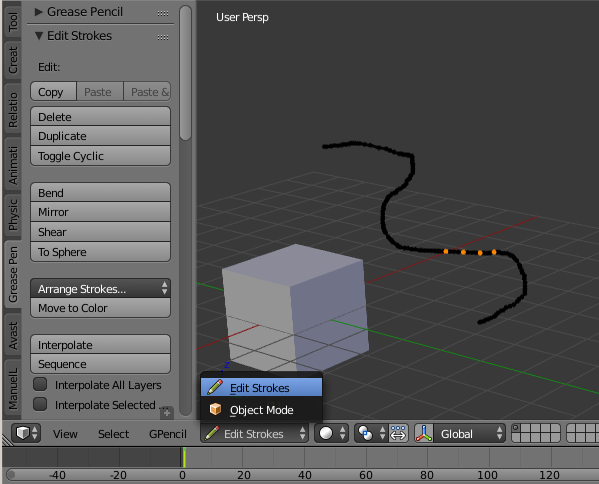

笔触编辑模式¶
通过3D视图标题栏上的 模式 选择菜单、蜡笔面板上的 Enable Editing 开关 (仅适用于2D编辑器如UV/图像编辑器，节点编辑器等) 或者使用 D-Tab 进入笔触编辑模式。在该模式下，可以使用许多常规编辑工具操作蜡笔笔触控制点。
用户可以使用工具移动和调整绘制好的蜡笔笔触形状。
进入工具栏中的蜡笔标签页，找到编辑笔触面板中的工具。

编辑面板与蜡笔笔触。
选择¶
蜡笔笔触由一系列顶点连接构成。要修改笔触，先要选择笔触上的控制点。用户只能选择活动图层上的笔触控制点。如上图，选中的控制点高亮显示。
Hint
设置 笔触宽度 为1，
使用鼠标选择端点, 或者使用面板上的选择按钮，详见 基础选择 。
与网格编辑类似，可用的选择方法有：
| 全选 | A |
|---|---|
| 框选 | B |
| 刷选 | C |
| 套索选择 | Ctrl-LMB |
| 关联项 | L, Ctrl-L |
| 扩展选择 | Ctrl-NumpadPlus |
| 缩减选择 | Ctrl-NumpadMinus |
| 选择笔画 | Alt-LMB |
编辑¶
标题栏¶
Some tools can be accessed through the 3D View header. e.g. Copy/Paste.
编辑笔触面板¶
参考
模式: 编辑笔触模式
面板:
菜单:
- 复制
Ctrl-C - 复制选中的蜡笔笔画(或者实际上是点和线段)。
- 粘贴
Ctrl-V - 粘贴已复制笔画。
- Paste & Merge
- 粘贴已复制笔画，并合并至活动图层。
- 删除
X - 点
- 删除选中点，打断笔画。
- 消融
- 删除后重新连接端点，不打断笔画。
- 笔触
- 删除包含选中点的整个笔画。
- 帧
- 制作 动画草图 是删除帧。
- 复制
Shift-D - 在原位置创建选中端点的副本。使用鼠标 平移 ，在新位置使用
LMB放置，RMB取消并删除副本。 - 切换循环
- 通过连接/断开首末端点闭合/打开选中笔画。
- 弯曲
Shift-W - 弯曲3D游标和鼠标之间的选中对象。
- 镜像
Ctrl-M - 沿一个或多个轴向镜像选中笔画。
- 切变
Shift-Ctrl-Alt-S - 沿屏幕水平轴向切变选中对象。
- 球形化
Shift-Alt-S - 绕中心点球面移动选中端点。
- Arrange Strokes
向上/下整理选中笔画在活动层中的绘制顺序。
Bring Froward, Send Backward, Bring to Front, Send to Back
- Move to Color
- 设置选中笔画的颜色为活动颜色。
- 插值
- Interpolate Ctrl-Alt-E
- 对关键帧之间的蜡笔笔画进行插值。
- Sequence Shift-Ctrl-E
- 对关键帧之间的所有帧进行笔画插值。
- Interpolate All Layers
- 勾选后，对所有层插值，而非仅活动层。
- Interpolate Selected Strokes
- 勾选后，仅对原始帧的选中笔画进行插值。
- 合并笔画
- 类型
- 合并 Ctrl-J
- 合并选中笔画。
- Join & Copy Shift-Ctrl-J
- 合并选中笔画为一个新笔画。
- Leave Gaps
- 合并后不连接两笔画，保留缺口。
- 反转方向
- 反转笔画的首末端点。
- Show Directions
- 显示笔画绘制方向，大绿点表示起点，小红点表示终点。
- Reproject Strokes
- 重新投影选中笔画至当前视图平面，使所有端点位于同一平面。用于修正意外移动3D游标或者改变视图导致的问题。
Sculpt Strokes面板¶
参考
模式: 编辑笔触模式
面板:
菜单:
快捷键:
E-LMB以笔刷形式，提供了几种编辑蜡笔笔画的工具，用于 绘制 或 雕刻 笔画外观，而无需使用麻烦的 选择-调整-选择-调整 编辑模式。
按住 E-LMB 并拖动进行雕刻。
笔刷¶
目前可用的笔刷有：
- 平滑
用于有选择地松弛抖动/振动和凸起，整理凌乱的草图。
- Affect Pressure
- 使用该选项，对笔画宽度值执行平滑化。
- 厚度
- 厚度笔刷用于提高(添加)或者降低(相减)游标下方笔画的宽度。
- 强度/力度
- 提高/降低 (
Ctrl) 笔画的alpha值，用于制作效果如减淡。 - 抓起
- 雕刻动作开始后，抓住笔刷圆范围内的控制点，并进行平移。
- 推
- 推笔刷与抓起笔刷非常类似，同样可以用于平移笔画控制点。然而，与抓起笔刷不同的是，推笔刷不限于仅操作雕刻开始时笔刷下方的端点。笔刷移动时，笔刷下方的端点基于笔刷的移动量发生移动。
- 扭曲
- 用于围绕游标扭曲/旋转端点，产生 旋涡 效果。有助于对笔画端点应用低级别的扭曲效果。 方向 用于控制端点沿顺时针(CW)或逆时针(CCW)方向旋转。
- 夹捏/膨胀
用于将端点从光标移开，或者移向光标。
- 夹捏
- 将端点移向光标。
- 膨胀
- 将端点推离光标。
- 随机
- 随机化笔画属性。如开启 位置 ，将在屏幕空间随机移动端点，产生抖动/锯齿状线条。
- 克隆
用于粘贴已复制端点(活动层的复制/粘贴缓存中)，并放置在鼠标单击位置。
按住
LMB并拖动，调整笔画粘贴位置。笔画中心随笔刷/光标移动。 ("印章模式")。- Use Falloff
- 启用 Use Falloff 选项，仅影响光标下方的的点，而非对所有新粘贴笔画做相同程度的移动。这样一来，在该模式下操作，该笔刷更接近粘贴和推笔刷 ("图章和涂抹")。
通用选项¶
- 半径
Shift-F/Wheel - 笔刷尺寸。非雕刻状态下使用
Shift-F提高/降低笔刷尺寸，或者在雕刻时(亦即放下笔尖，或者按住鼠标时)使用Wheel调整。 - 强度/力度
Ctrl-F/Shift-Wheel - 笔刷强度，可以通过手写笔压力改变。 (增/减见 半径).
- Use Falloff
- 启用计算笔刷影响的线性衰减。也就是说，靠近笔刷中心的点(亦即游标下方的端点)比边缘的端点受影响更大。
- Direction
E-Ctrl-LMB - Radio button to invert the brush effect.
- Affect
- Enable sculpt for position, strength (alpha value) and thickness in Smooth and Randomize brush.
更多选项¶
- Selection Mask
- 用于限制笔刷仅操作选中的端点。
- Alpha
Ctrl-H - 被选中点的透明度。可以使用
Ctrl-H切换可见性(隐藏/显示) 。